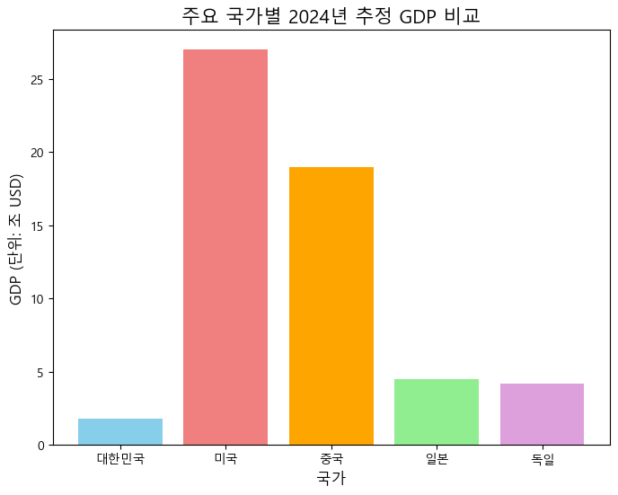

import matplotlib.pyplot as plt8 7주차: 백문이 불여일견! 데이터 시각화 기초 (Matplotlib)
강의 개요:
지난 6주차에는 파이썬 함수를 활용하여 수요와 공급 모델을 만들고 시장 균형을 분석하는 방법을 배웠습니다. 특히, 계산된 결과를 그래프로 시각화했을 때 모델의 작동 원리와 분석 결과(예: 수요/공급 이동 효과)를 훨씬 더 명확하고 직관적으로 이해할 수 있다는 것을 경험했죠.
경제학 및 회계 분야에서 데이터 분석 결과를 효과적으로 전달하고 숨겨진 패턴이나 추세를 발견하는 데 데이터 시각화(Data Visualization) 는 필수적인 기술입니다. 아무리 훌륭한 분석을 했더라도 그 결과를 다른 사람이 쉽게 이해할 수 있도록 보여주지 못한다면 그 가치가 반감될 수 있습니다. “백문이 불여일견(百聞不如一見)”이라는 말처럼, 때로는 잘 만들어진 그래프 하나가 수많은 숫자나 긴 설명보다 훨씬 강력한 메시지를 전달합니다.
이번 주에는 파이썬의 가장 대표적인 시각화 라이브러리인 Matplotlib 를 사용하여 다양한 종류의 그래프를 직접 그려보는 방법을 체계적으로 배우겠습니다. 지난주에 맛보기로 사용했던 선 그래프 외에도 막대 그래프, 산점도 등을 그리는 방법과 그래프에 제목, 축 레이블, 범례 등을 추가하여 더욱 완성도 높은 시각 자료를 만드는 방법을 익힐 것입니다.
이번 시간 학습 목표:
- 데이터 시각화의 중요성을 이해하고, 파이썬 시각화 라이브러리 Matplotlib의 기본 개념을 설명할 수 있습니다.
- Matplotlib의
pyplot모듈을 사용하여 기본적인 그래프 생성 및 표시 워크플로우를 이해합니다. - 선 그래프 (
plt.plot) 를 사용하여 시계열 데이터의 추세나 변수 간의 연속적인 관계를 시각화할 수 있습니다. - 막대 그래프 (
plt.bar) 를 사용하여 여러 항목 간의 크기나 빈도를 비교하는 그래프를 그릴 수 있습니다. - 산점도 (
plt.scatter) 를 사용하여 두 변수 간의 관계(상관관계 등)를 시각적으로 탐색할 수 있습니다. - 그래프에 제목, 축 레이블, 범례 등을 추가하고, 색상, 선 스타일, 마커 등을 변경하며, 그래프 크기, 축 범위를 조절하는 등 기본적인 그래프 꾸미기(Customization) 를 수행할 수 있습니다.
- (복습) Colab 환경에서 한글 폰트 설정을 적용하여 그래프에 한글을 올바르게 표시할 수 있습니다.
8.1 1. 데이터 시각화 시작하기: Matplotlib 소개
데이터 시각화는 왜 중요할까요?
- 패턴 및 추세 발견: 숫자로만 봐서는 알기 어려운 데이터 속 패턴, 추세, 이상치(outlier) 등을 시각적으로 빠르게 파악할 수 있습니다.
- 관계 이해: 변수들 간의 상관관계나 복잡한 관계를 직관적으로 이해하는 데 도움을 줍니다.
- 효과적인 소통: 분석 결과를 다른 사람들에게 쉽고 명확하게 전달하는 강력한 도구입니다. 보고서나 프레젠테이션의 설득력을 높여줍니다.
Matplotlib 이란?
Matplotlib는 파이썬에서 가장 널리 사용되는 데이터 시각화 라이브러리 중 하나입니다. 마치 그림을 그리는 도화지와 다양한 펜, 물감 같은 도구를 제공한다고 생각할 수 있습니다. 다양한 종류의 그래프를 정교하게 그릴 수 있는 강력한 기능을 제공하며, 다른 데이터 분석 라이브러리(NumPy, Pandas)와도 잘 연동됩니다.
기본 사용법 (pyplot 모듈)
Matplotlib의 여러 기능 중 우리는 주로 pyplot 이라는 모듈을 사용할 것입니다. pyplot은 MATLAB과 유사한 인터페이스를 제공하여 비교적 쉽게 그래프를 그릴 수 있게 해줍니다. 관례적으로 plt 라는 별칭(alias)으로 import하여 사용합니다.
기본적인 그래프 그리기 과정:
- 데이터 준비: 그래프로 나타낼 데이터를 준비합니다 (보통 리스트나 NumPy 배열 형태).
- 그래프 생성:
plt.plot(),plt.bar(),plt.scatter()등의 함수를 사용하여 원하는 종류의 그래프를 그립니다. - (선택) 그래프 꾸미기:
plt.title(),plt.xlabel(),plt.ylabel(),plt.legend()등으로 제목, 축 레이블, 범례 등을 추가하고, 색상, 스타일 등을 조절합니다. - 그래프 보여주기:
plt.show()함수를 호출하여 완성된 그래프를 화면에 표시합니다. (Jupyter/Colab 환경에서는%matplotlib inline설정이 되어 있으면plt.show()없이도 그래프가 표시되는 경우가 많지만, 명시적으로 호출하는 것이 좋습니다.)
★ Colab 환경 한글 폰트 설정 (복습 및 필수) ★
Matplotlib의 기본 설정에서는 한글이 깨져 보일 수 있습니다. 따라서 그래프에 한글(제목, 축 레이블 등)을 사용하려면 반드시 아래 코드를 실행하여 한글 폰트를 설치하고 설정해주어야 합니다. (Colab 사용 시 필요)
# Colab 사용 시 한글 폰트 설치 및 설정
# (이 코드는 Colab 환경에서 실행해야 효과가 있습니다.)
# 이미 설치 및 설정했다면 다시 실행할 필요는 없을 수 있습니다.
import matplotlib.pyplot as plt
import platform
# 1. 나눔 폰트 설치 (최초 1회 필요)
# !sudo apt-get update -qq
# !sudo apt-get install -y fonts-nanum* -qq
# 2. 폰트 캐시 재생성 (설치 후 필요할 수 있음)
# import matplotlib.font_manager as fm
# fm._rebuild() # 폰트 캐시 강제 재생성 (시간 소요)
# 3. 런타임 다시 시작 (Colab 메뉴 > 런타임 > 런타임 다시 시작) - 중요!
# 4. Matplotlib 폰트 설정 적용
try:
if platform.system() == 'Linux': # Colab 포함
plt.rc('font', family='NanumBarunGothic')
elif platform.system() == 'Windows':
plt.rc('font', family='Malgun Gothic')
elif platform.system() == 'Darwin': # macOS
plt.rc('font', family='AppleGothic')
except FileNotFoundError:
print("설치된 한글 폰트를 찾을 수 없습니다. 폰트 이름을 확인하거나 추가 설치가 필요합니다.")
# 5. 마이너스 기호 깨짐 방지 설정
plt.rcParams['axes.unicode_minus'] = False
# 설정 확인용 테스트 플롯 (선택 사항)
# plt.plot([1, 2, 3], [1, 4, 9])
# plt.title('테스트 한글 제목')
# plt.xlabel('X축 라벨')
# plt.show()
print("한글 폰트 설정이 시도되었습니다. 오류 메시지가 없다면 적용되었을 가능성이 높습니다.")한글 폰트 설정이 시도되었습니다. 오류 메시지가 없다면 적용되었을 가능성이 높습니다.주의: 폰트 설치 후에는 Colab의 “런타임 다시 시작”이 필요할 수 있습니다.
8.2 2. 시간의 흐름을 따라서: 선 그래프 (plt.plot())
선 그래프(Line Plot) 는 시간이나 순서에 따라 변화하는 데이터를 표현하는 데 가장 적합한 그래프 유형입니다. 데이터 포인트들을 순서대로 선으로 연결하여 추세나 변화 패턴을 보여줍니다.
기본 사용법: plt.plot(x축_데이터_리스트, y축_데이터_리스트)
예제 1: 연도별 가상 GDP 변화
import matplotlib.pyplot as plt
# 데이터 준비
years = [2020, 2021, 2022, 2023, 2024]
gdp_kr = [1.65, 1.72, 1.80, 1.85, 1.90] # 단위: 조 달러 (가상)
# 선 그래프 그리기
plt.plot(years, gdp_kr)
# 그래프 보여주기
plt.show()예제 2: 여러 국가 GDP 추세 비교 및 그래프 꾸미기
import matplotlib.pyplot as plt
# 데이터 준비
years = [2020, 2021, 2022, 2023, 2024]
gdp_kr = [1.65, 1.72, 1.80, 1.85, 1.90] # 한국 GDP (조 달러)
gdp_jp = [5.0, 5.1, 4.4, 4.2, 4.5] # 일본 GDP (조 달러) - 환율 영향 등으로 변동성 가정
# 그래프 크기 설정
plt.figure(figsize=(8, 5)) # 가로 8인치, 세로 5인치
# 여러 개 선 그래프 그리기 (각 plot마다 label 지정)
plt.plot(years, gdp_kr, marker='o', linestyle='-', color='blue', label='한국 GDP')
plt.plot(years, gdp_jp, marker='s', linestyle='--', color='red', label='일본 GDP') # s: 사각형 마커, --: 점선
# 제목 추가
plt.title('한국과 일본의 연도별 GDP 변화 (가상)', fontsize=14)
# 축 레이블 추가
plt.xlabel('연도', fontsize=12)
plt.ylabel('GDP (단위: 조 USD)', fontsize=12)
# 범례(legend) 표시 (plot에서 지정한 label 사용)
plt.legend()
# 그리드 표시
plt.grid(True, axis='y', linestyle=':', alpha=0.7)
# 그래프 보여주기
plt.show()주요 꾸미기 옵션 (plt.plot 내부):
marker: 데이터 포인트를 표시할 모양 (‘o’, ‘s’, ‘^’, ‘v’, ’*‘,’.’ 등)linestyle또는ls: 선의 스타일 (‘-’, ‘–’, ‘:’, ‘-.’ 등)color또는c: 선의 색상 (‘blue’, ‘red’, ‘green’, ‘black’, ‘skyblue’, ‘crimson’ 등 또는 ‘#FF0000’ 같은 헥사코드)label: 범례에 표시될 선의 이름 (반드시plt.legend()호출 필요)
예제 3: 수요와 공급 곡선 그리기 (복습 및 개선)
지난주에 그렸던 수요/공급 곡선을 plt.plot과 꾸미기 옵션을 사용하여 다시 그려봅시다.
import matplotlib.pyplot as plt
import numpy as np # NumPy 사용 (데이터 생성 편의)
# 수요/공급 함수 정의 (Week 6 내용 재사용)
def quantity_demanded(price, a=100, b=2):
q_d = a - b * price
return max(0, q_d)
def quantity_supplied(price, c=10, d=3):
q_s = c + d * price
return max(0, q_s)
# 파라미터 및 데이터 생성
a, b = 100, 2
c, d = 10, 3
p_max_demand = a / b
price_range = np.linspace(0, p_max_demand + 5, 50) # 가격 범위 약간 넓게
qd_values = [quantity_demanded(p, a, b) for p in price_range]
qs_values = [quantity_supplied(p, c, d) for p in price_range]
# 균형점 (Week 6 계산 결과: P*=18, Q*=64)
p_eq, q_eq = 18, 64
# 그래프 그리기
plt.figure(figsize=(10, 7))
# 수요 곡선 (파란색, 실선, 동그라미 마커)
plt.plot(qd_values, price_range, label='수요 곡선 (D)', color='blue', linestyle='-', marker='o', markersize=4)
# 공급 곡선 (빨간색, 점선, 사각형 마커)
plt.plot(qs_values, price_range, label='공급 곡선 (S)', color='red', linestyle='--', marker='s', markersize=4)
# 균형점 (검정색 큰 별표 마커)
plt.scatter(q_eq, p_eq, color='black', marker='*', s=200, zorder=5, label=f'균형점 E ({q_eq:.0f}, {p_eq:.0f})')
# 그래프 꾸미기
plt.title('시장 수요와 공급 곡선', fontsize=16)
plt.xlabel('수량 (Quantity)', fontsize=12)
plt.ylabel('가격 (Price)', fontsize=12)
plt.legend(fontsize=11) # 범례
plt.grid(True, linestyle=':', alpha=0.5)
plt.xlim(left=0) # X축 범위 0부터 시작
plt.ylim(bottom=0) # Y축 범위 0부터 시작
plt.show()[실습 1] 선 그래프 연습
- 월별 물가 상승률 시각화: 다음은 6개월간의 월별 물가 상승률(전년 동월 대비 %) 데이터입니다.
months = [1, 2, 3, 4, 5, 6]inflation_rates = [3.1, 3.5, 3.8, 3.2, 2.9, 2.7]이 데이터를 사용하여 월별 물가 상승률 추세를 보여주는 선 그래프를 그리세요. x축은 ‘월(Month)’, y축은 ‘물가 상승률(%)’로 레이블을 붙이고, 그래프 제목은 ’월별 물가 상승률 추이’로 하세요. 선 색상은 ’green’, 마커는 ‘x’ 로 지정해보세요. - 두 상품 가격 추이 비교: 두 경쟁 상품 A, B의 5일간 가격 데이터가 다음과 같습니다.
days = [1, 2, 3, 4, 5]price_A = [1000, 1050, 1020, 1100, 1080]price_B = [980, 1000, 1010, 1030, 1020]두 상품의 가격 추이를 하나의 그래프에 선 그래프로 그리세요. 각 선에 ‘상품 A’, ‘상품 B’ 라는 라벨을 붙이고 범례를 표시하세요. 그래프 제목과 축 레이블도 적절하게 추가하세요.
# 실습 1-1: 월별 물가 상승률
import matplotlib.pyplot as plt
# 한글 폰트 설정은 미리 되었다고 가정
months = [1, 2, 3, 4, 5, 6]
inflation_rates = [3.1, 3.5, 3.8, 3.2, 2.9, 2.7]
plt.figure(figsize=(8, 5))
plt.plot(months, inflation_rates, color='green', marker='x', linestyle='-')
plt.title('월별 물가 상승률 추이')
plt.xlabel('월(Month)')
plt.ylabel('물가 상승률(%)')
plt.grid(True, linestyle=':', alpha=0.7)
plt.show()# 실습 1-2: 두 상품 가격 추이 비교
import matplotlib.pyplot as plt
days = [1, 2, 3, 4, 5]
price_A = [1000, 1050, 1020, 1100, 1080]
price_B = [980, 1000, 1010, 1030, 1020]
plt.figure(figsize=(8, 5))
plt.plot(days, price_A, marker='o', label='상품 A')
plt.plot(days, price_B, marker='s', label='상품 B')
plt.title('상품 A와 B의 가격 추이 비교')
plt.xlabel('일자 (Day)')
plt.ylabel('가격 (원)')
plt.legend()
plt.grid(True, axis='y', linestyle=':')
plt.show()8.3 3. 항목 간 크기 비교: 막대 그래프 (plt.bar())
막대 그래프(Bar Chart) 는 여러 범주형(Categorical) 항목들의 크기(값) 를 비교하는 데 유용합니다. 각 항목을 나타내는 막대의 높이(또는 길이)로 값의 크기를 표현합니다.
기본 사용법: plt.bar(x축_항목_리스트, y축_값_리스트)
예제 1: 주요 국가별 GDP 비교
Week 2 시각화 맛보기에서 봤던 예제입니다.
import matplotlib.pyplot as plt
# 한글 폰트 설정은 미리 되었다고 가정
# 데이터 준비
countries = ['대한민국', '미국', '중국', '일본', '독일']
gdp_values_usd = [1.8, 27.0, 19.0, 4.5, 4.2] # 단위: 조 USD
# 막대 그래프 그리기
plt.figure(figsize=(8, 6))
plt.bar(countries, gdp_values_usd, color=['skyblue', 'lightcoral', 'orange', 'lightgreen', 'plum'])
# 제목 및 축 레이블
plt.title('주요 국가별 2024년 추정 GDP 비교', fontsize=15)
plt.ylabel('GDP (단위: 조 USD)', fontsize=12)
plt.xlabel('국가', fontsize=12)
# plt.xticks(rotation=45) # 국가 이름이 길 경우 글자 회전 (선택 사항)
plt.show()
예제 2: GDP 구성 요소 시각화 (딕셔너리 활용)
딕셔너리에 저장된 GDP 구성 요소 데이터를 막대 그래프로 표현해 봅시다.
import matplotlib.pyplot as plt
# 한글 폰트 설정은 미리 되었다고 가정
# 딕셔너리 데이터
gdp_components_dict = {
'민간 소비(C)': 1000.5,
'국내 총투자(I)': 350.2,
'정부 지출(G)': 450.0,
'순수출(NX)': 50.8
}
# 딕셔너리에서 key(항목 이름)와 value(값)를 리스트로 분리
components = list(gdp_components_dict.keys())
values = list(gdp_components_dict.values())
# 막대 그래프 그리기
plt.figure(figsize=(8, 5))
plt.bar(components, values, color=['gold', 'lightcoral', 'lightskyblue', 'lightgreen'])
plt.title('가상 국가 GDP 구성 요소', fontsize=15)
plt.ylabel('금액 (단위: 조 원)', fontsize=12)
plt.show()
수평 막대 그래프 (plt.barh()): 항목 이름이 길거나 항목 수가 많을 때는 수평 막대 그래프가 유용할 수 있습니다. plt.barh(y축_항목_리스트, x축_값_리스트) 형태로 사용합니다.
[실습 2] 막대 그래프 연습
- 대륙별 인구 비교: 다음은 대략적인 대륙별 인구 데이터(억 명)입니다.
continents = ['Asia', 'Africa', 'Europe', 'North America', 'South America', 'Oceania']populations_billion = [47.0, 14.0, 7.5, 6.0, 4.3, 0.4]이 데이터를 사용하여 대륙별 인구를 비교하는 막대 그래프를 그리세요. 그래프 제목과 축 레이블을 추가하세요. - 가상 기업 분기별 영업이익: 어떤 기업의 4분기 영업이익(억 원) 데이터가 딕셔너리로 주어졌습니다.
quarterly_profit = {'1분기': 35.2, '2분기': 41.5, '3분기': 28.8, '4분기': 45.0}이 데이터를 사용하여 분기별 영업이익을 보여주는 막대 그래프를 그리세요.
# 실습 2-1: 대륙별 인구 비교
import matplotlib.pyplot as plt
continents = ['Asia', 'Africa', 'Europe', 'North America', 'South America', 'Oceania']
populations_billion = [47.0, 14.0, 7.5, 6.0, 4.3, 0.4]
plt.figure(figsize=(10, 6))
plt.bar(continents, populations_billion, color='skyblue')
plt.title('대륙별 인구 (추정치)')
plt.ylabel('인구 (단위: 억 명)')
plt.xlabel('대륙')
plt.show()# 실습 2-2: 분기별 영업이익
import matplotlib.pyplot as plt
quarterly_profit = {'1분기': 35.2, '2분기': 41.5, '3분기': 28.8, '4분기': 45.0}
quarters = list(quarterly_profit.keys())
profits = list(quarterly_profit.values())
plt.figure(figsize=(8, 5))
plt.bar(quarters, profits, color='lightcoral')
plt.title('분기별 영업이익')
plt.ylabel('영업이익 (억 원)')
plt.xlabel('분기')
plt.grid(True, axis='y', linestyle=':', alpha=0.7)
plt.show()8.4 4. 변수 간 관계 살펴보기: 산점도 (plt.scatter())
산점도(Scatter Plot) 는 두 개의 수치형 변수 간의 관계를 파악하는 데 사용됩니다. 각 데이터 포인트를 x축 값과 y축 값에 해당하는 위치에 점으로 찍어서 분포를 보여줍니다. 점들이 특정 패턴(예: 우상향, 우하향)을 보이면 두 변수 간에 상관관계가 있을 가능성을 시사합니다.
기본 사용법: plt.scatter(x축_데이터_리스트, y축_데이터_리스트)
예제 1: 공부 시간과 시험 점수 (가상 데이터)
import matplotlib.pyplot as plt
# 한글 폰트 설정 미리 되었다고 가정
# 데이터 준비 (10명 학생의 공부 시간과 시험 점수)
study_hours = [2, 3, 5, 1, 6, 7, 4, 8, 9, 5.5]
exam_scores = [65, 70, 75, 60, 85, 90, 72, 92, 95, 80]
# 산점도 그리기
plt.figure(figsize=(8, 6))
plt.scatter(study_hours, exam_scores, color='purple', alpha=0.7) # alpha는 투명도
# 제목 및 축 레이블
plt.title('공부 시간과 시험 점수 간의 관계 (가상)', fontsize=14)
plt.xlabel('공부 시간 (시간)', fontsize=12)
plt.ylabel('시험 점수', fontsize=12)
plt.grid(True, linestyle=':', alpha=0.5)
plt.show()
# 그래프 해석: 공부 시간이 길수록 시험 점수가 대체로 높아지는 양(+)의 관계가 있는 것으로 보입니다.예제 2: 인플레이션율과 실업률 관계 (가상 데이터, 필립스 곡선 개념)
필립스 곡선은 단기적으로 인플레이션율과 실업률 간의 역(-)의 관계가 있음을 보여주는 개념입니다. (장기적 관계는 논쟁적)
import matplotlib.pyplot as plt
import numpy as np # 데이터 생성을 위해 사용
# 한글 폰트 설정 미리 되었다고 가정
# 가상 데이터 생성 (실제 데이터와는 다를 수 있음)
np.random.seed(42) # 결과 재현을 위한 시드 설정
unemployment_rate = np.linspace(3, 10, 20) # 3% ~ 10% 실업률
# 실업률이 낮을수록 인플레이션이 높아지는 경향 (역관계) + 약간의 노이즈 추가
inflation_rate = 10 - unemployment_rate * 0.8 + np.random.randn(20) * 0.5
# 산점도 그리기
plt.figure(figsize=(8, 6))
plt.scatter(unemployment_rate, inflation_rate, color='orange')
plt.title('실업률과 인플레이션율 간의 관계 (가상)', fontsize=14)
plt.xlabel('실업률 (%)', fontsize=12)
plt.ylabel('인플레이션율 (%)', fontsize=12)
plt.grid(True, linestyle=':', alpha=0.5)
plt.show()
# 그래프 해석: 대체로 실업률이 낮을수록 인플레이션율이 높고, 실업률이 높을수록 인플레이션율이 낮은 우하향 관계가 관찰됩니다. (단기 필립스 곡선 개념과 유사)산점도 꾸미기 옵션 (plt.scatter 내부):
s: 마커의 크기c또는color: 마커의 색상 (하나의 색 또는 각 점마다 다른 색 지정 가능)marker: 마커의 모양 (‘o’, ‘s’, ‘^’, ‘x’ 등)alpha: 마커의 투명도 (0~1 사이 값, 점이 많을 때 겹침 확인에 유용)
8.5 5. 그래프 완성도 높이기: 추가적인 꾸미기 옵션
지금까지 배운 plt.title(), plt.xlabel(), plt.ylabel(), plt.legend(), plt.grid(), plt.figure(figsize=...) 외에도 그래프를 더 보기 좋고 정보성 있게 만드는 몇 가지 옵션들이 있습니다.
plt.xticks()/plt.yticks(): 축 눈금의 위치나 표시될 텍스트를 직접 지정할 수 있습니다.plt.xlim()/plt.ylim(): 그래프의 x축 또는 y축 표시 범위를 수동으로 설정합니다. (예:plt.ylim(0, 100)은 y축을 0부터 100까지 표시)plt.text(x, y, text): 그래프 상의 특정 (x, y) 위치에 원하는 텍스트를 추가할 수 있습니다.plt.axhline(y)/plt.axvline(x): 특정 y값에 수평선 또는 특정 x값에 수직선을 그릴 수 있습니다. (예: 평균값 표시, 특정 기준선 표시 등)
예제: 꾸미기 옵션 종합 적용 (수요/공급 그래프 개선)
import matplotlib.pyplot as plt
import numpy as np
# 수요/공급 함수, 파라미터, 데이터 생성 (이전 예제 재사용)
def quantity_demanded(price, a=100, b=2): return max(0, a - b * price)
def quantity_supplied(price, c=10, d=3): return max(0, c + d * price)
a, b = 100, 2
c, d = 10, 3
p_max_demand = a / b
price_range = np.linspace(0, p_max_demand + 5, 50)
qd_values = [quantity_demanded(p, a, b) for p in price_range]
qs_values = [quantity_supplied(p, c, d) for p in price_range]
p_eq, q_eq = 18, 64
# --- 그래프 그리기 및 꾸미기 ---
plt.figure(figsize=(12, 8)) # 그래프 크기 키우기
# 수요/공급 곡선 그리기 (선 굵기 'linewidth' 추가)
plt.plot(qd_values, price_range, label='수요 곡선 (D)', color='blue', linewidth=2)
plt.plot(qs_values, price_range, label='공급 곡선 (S)', color='red', linewidth=2)
# 균형점 표시 및 텍스트 추가
plt.scatter(q_eq, p_eq, color='black', marker='o', s=100, zorder=5, label=f'균형점 E ({q_eq:.0f}, {p_eq:.0f})')
plt.text(q_eq + 2, p_eq + 1, f'Equilibrium (Q={q_eq}, P={p_eq})', fontsize=11) # 균형점 옆에 텍스트
# 균형점 점선 추가
plt.plot([q_eq, q_eq], [0, p_eq], color='grey', linestyle='--', linewidth=1)
plt.plot([0, q_eq], [p_eq, p_eq], color='grey', linestyle='--', linewidth=1)
# 제목 및 축 레이블 (폰트 크기 조절)
plt.title('시장 수요와 공급 (꾸미기 적용)', fontsize=16)
plt.xlabel('수량 (Quantity)', fontsize=13)
plt.ylabel('가격 (Price)', fontsize=13)
# 축 범위 설정 (조금 더 여유있게)
plt.xlim(0, max(max(qd_values), max(qs_values)) * 1.1) # 최대 수량보다 10% 더
plt.ylim(0, max(price_range) * 1.1) # 최대 가격보다 10% 더
# 축 눈금 설정 (선택 사항)
plt.xticks(fontsize=11)
plt.yticks(fontsize=11)
# 범례 표시 및 그리드
plt.legend(fontsize=12)
plt.grid(True, linestyle=':', alpha=0.6)
plt.show()[실습 3] 산점도 및 꾸미기 연습
- GDP와 기대수명 관계 시각화 (가상 데이터): 여러 국가의 1인당 GDP(달러)와 기대수명 데이터가 다음과 같이 주어졌습니다.
gdp_per_capita = [5000, 10000, 20000, 35000, 50000, 65000]life_expectancy = [65, 70, 75, 78, 80, 82]두 변수 간의 관계를 보여주는 산점도를 그리세요. x축은 ‘1인당 GDP (USD)’, y축은 ‘기대수명 (세)’로 레이블을 지정하고, 그래프 제목은 ’1인당 GDP와 기대수명 간의 관계’로 하세요. 점 색상은 ’green’, 마커 모양은 ‘^’(삼각형)으로 지정해보세요. - 그래프 꾸미기: 위 1번에서 그린 산점도에 다음 꾸미기 옵션을 추가 적용해보세요.
figsize를 (9, 6)으로 설정grid추가- x축 범위를 0부터 70000까지, y축 범위를 60부터 85까지로 설정 (
plt.xlim,plt.ylim)
# 실습 3-1: GDP와 기대수명 산점도
import matplotlib.pyplot as plt
gdp_per_capita = [5000, 10000, 20000, 35000, 50000, 65000]
life_expectancy = [65, 70, 75, 78, 80, 82]
plt.scatter(gdp_per_capita, life_expectancy, color='green', marker='^')
plt.title('1인당 GDP와 기대수명 간의 관계 (가상)')
plt.xlabel('1인당 GDP (USD)')
plt.ylabel('기대수명 (세)')
plt.show()# 실습 3-2: 산점도 꾸미기 추가
gdp_per_capita = [5000, 10000, 20000, 35000, 50000, 65000]
life_expectancy = [65, 70, 75, 78, 80, 82]
plt.figure(figsize=(9, 6)) # 그래프 크기 설정
plt.scatter(gdp_per_capita, life_expectancy, color='green', marker='^')
plt.title('1인당 GDP와 기대수명 간의 관계 (가상)', fontsize=15)
plt.xlabel('1인당 GDP (USD)', fontsize=12)
plt.ylabel('기대수명 (세)', fontsize=12)
plt.grid(True, linestyle=':', alpha=0.6) # 그리드 추가
plt.xlim(0, 70000) # x축 범위 설정
plt.ylim(60, 85) # y축 범위 설정
plt.show()8.6 보충 학습: Matplotlib 그래프 해부하기 (Anatomy of a Figure)
우리가 plt.plot(), plt.bar(), plt.title() 등 다양한 pyplot 함수를 사용하여 그래프를 그리고 꾸며보았습니다. Matplotlib으로 더 정교하고 복잡한 그래프를 만들거나, 공식 문서나 다른 자료들을 참고하여 고급 기능을 사용하려면 그래프가 어떤 요소들로 구성되어 있는지 그 구조(Anatomy) 를 이해하는 것이 큰 도움이 됩니다.
Matplotlib 문서에서는 종종 “Anatomy of a Figure” 라는 그림을 통해 그래프의 각 부분을 설명합니다. 마치 우리가 인체의 각 부위 명칭을 알면 의학 정보를 더 잘 이해할 수 있듯이, 그래프의 구성 요소 명칭과 역할을 알면 Matplotlib의 기능을 더 깊이 있게 활용할 수 있습니다.
여기서는 주요 구성 요소들을 살펴보고, 우리가 배운 pyplot 함수들과 어떻게 연결되는지 알아보겠습니다. (실제 “Anatomy of a Figure” 그림은 Matplotlib 공식 홈페이지 등에서 검색해보시면 쉽게 찾을 수 있습니다.)
주요 구성 요소:
- Figure (피겨):
- 그래프가 그려지는 전체 캔버스 또는 창(window) 에 해당합니다. 비유하자면, 그림을 그리는 도화지 전체나 액자를 포함한 그림 전체라고 할 수 있습니다.
- 하나의 Figure 안에는 하나 또는 여러 개의 Axes(서브플롯) 가 포함될 수 있습니다.
- 우리가
plt.figure(figsize=(...))함수를 사용하여 크기를 조절했던 것이 바로 이 Figure 객체의 크기입니다.
- Axes (액시즈, 복수형):
- 실제 데이터가 그려지는 영역, 즉 우리가 흔히 ’그래프’라고 부르는 부분입니다. x축, y축, 그리고 그려지는 데이터(선, 막대, 점 등)를 포함하는 하나의 플롯(plot) 입니다.
- 비유하자면, Figure라는 도화지 위에 실제 그림이 그려지는 사각형 영역입니다.
- 하나의 Figure 안에 여러 개의 Axes를 배열하여 다양한 그래프를 한 번에 보여줄 수도 있습니다 (예:
plt.subplot()함수 - 이번 과정에서는 자세히 다루지 않음). - 우리가 사용한 대부분의
pyplot함수들 (plt.plot,plt.title,plt.xlabel등)은 내부적으로 현재 활성화된 하나의 Axes 에 대해 작동합니다.
- Axis (액시스, 단수형):
- 그래프의 축 그 자체를 의미합니다. 보통 x축(가로축)과 y축(세로축)이 있습니다.
- 이 축은 데이터의 범위를 나타내는 눈금(Ticks)과 그 값(Tick Labels), 그리고 축의 이름(Axis Label)을 포함합니다.
plt.xlim(),plt.ylim(): 축의 데이터 범위를 설정합니다.plt.xlabel(),plt.ylabel(): 각 축의 이름(Label) 을 설정합니다.plt.xticks(),plt.yticks(): 축에 표시될 눈금(Tick) 의 위치나 눈금에 붙는 텍스트(Tick Label) 를 설정합니다.
- Title (타이틀):
- 해당 Axes(그래프 영역)의 제목입니다.
plt.title()함수를 사용하여 설정합니다.
- Legend (레전드, 범례):
- 하나의 Axes 안에 여러 개의 데이터 계열(예: 여러 개의 선 그래프)이 그려질 때, 각 계열이 무엇을 의미하는지 설명하는 안내 상자입니다.
plt.plot()등에서label='...'옵션으로 각 데이터 계열의 이름을 지정한 후,plt.legend()함수를 호출하여 표시합니다.
- Grid (그리드, 격자):
- 데이터 값을 더 쉽게 읽을 수 있도록 Axes 영역 내에 그려지는 격자선입니다.
plt.grid(True)함수를 사용하여 표시합니다.
- Spines (스파인, 축 선):
- Axes 영역의 테두리를 그리는 선입니다. 보통 상하좌우 4개의 축 선이 있습니다. (기본적으로 표시됨)
- Ticks (틱, 눈금) 및 Tick Labels (틱 라벨, 눈금 레이블):
- Axis(축) 위에 데이터의 위치를 나타내기 위해 표시되는 작은 선(Tick) 과 그 선 옆에 붙는 숫자 또는 글자(Tick Label) 입니다.
plt.xticks(),plt.yticks()함수로 위치나 내용을 조절할 수 있습니다.
- (참고) Artist (아티스트):
- Matplotlib에서 Figure 위에 그려지는 모든 요소들(텍스트, 선, 도형, 축 등)을 통칭하여 Artist라고 부릅니다. 우리가
pyplot함수를 호출하면 내부적으로 이런 Artist 객체들이 생성되고 수정되어 화면에 그려지는 것입니다.
- Matplotlib에서 Figure 위에 그려지는 모든 요소들(텍스트, 선, 도형, 축 등)을 통칭하여 Artist라고 부릅니다. 우리가
시각적 예시: 주요 요소 레이블링
아래 코드는 간단한 그래프에 plt.text() 함수를 사용하여 각 구성 요소의 명칭을 표시하는 예시입니다. (텍스트 위치는 대략적으로 잡았습니다.)
import matplotlib.pyplot as plt
import numpy as np
# 1. Figure 객체 생성 및 크기 설정
fig = plt.figure(figsize=(10, 7))
plt.text(0.5, 1.02, 'Figure 영역 (전체 캔버스)', ha='center', va='bottom', fontsize=12, color='gray')
# 2. Axes 객체 (pyplot 함수 사용 시 암묵적으로 생성됨)
# 간단한 데이터 및 플롯 생성
x = np.linspace(0, 10, 100)
y = np.sin(x)
plt.plot(x, y, label='sin(x) 곡선')
# Axes 영역을 가리키는 텍스트 추가 (대략적인 위치)
plt.text(5, 0.8, 'Axes 영역 (실제 플롯)', ha='center', fontsize=12, color='darkblue')
# 3. Title 설정
plt.title('Matplotlib 그래프 구성 요소 예시', fontsize=16)
plt.text(5, 1.1, '<- Title', ha='center', va='center', fontsize=11, color='green')
# 4. Axis Labels 설정
plt.xlabel('X 축 (시간 또는 다른 변수)', fontsize=12)
plt.ylabel('Y 축 (값)', fontsize=12)
plt.text(9.5, -0.2, '<- X축 Label', ha='right', va='center', fontsize=11, color='green')
plt.text(-1.5, 0, '<- Y축 Label', rotation=90, ha='center', va='center', fontsize=11, color='green')
# 5. Legend 설정
plt.legend(loc='lower left') # 범례 위치 지정
plt.text(1, -0.7, '<- Legend (범례)', ha='left', va='center', fontsize=11, color='green')
# 6. Grid 설정
plt.grid(True, linestyle=':')
plt.text(2, 0.2, 'Grid (격자)', ha='center', va='center', fontsize=11, color='grey')
# 7. Ticks 와 Tick Labels (자동 생성됨, 위치 표시)
plt.text(5, -1.2, 'X축 Ticks & Tick Labels', ha='center', va='center', fontsize=11, color='purple')
plt.text(-0.8, 0.5, 'Y축 Ticks\n& Tick Labels', ha='center', va='center', fontsize=11, color='purple', rotation=90)
# Y축 범위 약간 조정 (텍스트 보이게)
plt.ylim(-1.3, 1.3)
plt.xlim(-1, 11)
# 8. Spines (테두리 선, 기본 표시됨)
plt.text(10.5, 0, 'Spine (축 테두리선)', rotation=-90, ha='center', va='center', fontsize=11, color='brown')
plt.show()8.7 6. 마무리 및 다음 시간 예고
오늘은 파이썬의 대표적인 시각화 라이브러리인 Matplotlib 를 사용하여 데이터를 시각화하는 기초적인 방법을 배웠습니다. 시각화의 중요성을 다시 한번 확인하고, 선 그래프(plt.plot), 막대 그래프(plt.bar), 산점도(plt.scatter) 등 기본적인 그래프 유형을 그리는 방법을 익혔습니다. 또한, 그래프에 제목, 축 레이블, 범례 등을 추가하고 색상, 스타일, 크기, 축 범위 등을 조절하여 그래프의 완성도를 높이는 꾸미기 방법까지 살펴보았습니다. (Colab에서 한글 폰트 설정의 중요성도 잊지 마세요!)
데이터를 시각화하는 능력은 경제 및 회계 데이터를 분석하고 그 결과를 효과적으로 전달하는 데 필수적입니다. 오늘 배운 내용들을 바탕으로 앞으로 다양한 데이터를 직접 그래프로 그려보면서 연습하시기 바랍니다.
다음 시간에는 (마지막 8주차):
어느덧 마지막 주차네요! 8주차에는 지금까지 배운 파이썬의 모든 개념(변수, 자료형, 자료구조, 조건문, 반복문, 함수, 기본 시각화)을 총정리하고, 이를 종합적으로 활용하는 시간을 가질 예정입니다. 간단한 미니 프로젝트나 케이스 스터디를 통해 실제 경제/금융 데이터를 (아주 간단한 형태로) 가져와서 처리하고, 분석하며, 시각화하는 전체 과정을 경험해 볼 수 있도록 구성할 예정입니다. 또는, 수치 계산에 특화된 NumPy 라이브러리의 기초를 간단히 소개하며 앞으로의 학습 방향을 제시할 수도 있습니다. 마지막 시간까지 유종의 미를 거둘 수 있도록 함께 노력해 봅시다!
8.8 일곱 번째 주차 과제
오늘 배운 Matplotlib 시각화 기능을 연습하기 위해 다음 과제를 Colab에서 새 노트(Week7_Assignment.ipynb 등)에 풀어보세요.
- 연도별 수출입액 시각화: 어떤 국가의 5년간 수출액과 수입액 데이터(단위: 억 달러)가 다음과 같습니다.
years = [2020, 2021, 2022, 2023, 2024]exports = [510, 620, 680, 650, 700]imports = [480, 580, 650, 630, 680]- 수출액과 수입액 추이를 하나의 선 그래프에 함께 그리세요. 각 선에 ‘수출액’, ‘수입액’ 라벨을 붙이고 범례를 표시하세요.
- 그래프 제목은 ‘연도별 수출입액 추이’, x축은 ‘연도’, y축은 ‘금액 (억 달러)’ 로 지정하세요.
- 그리드를 추가하고, 각 데이터 포인트를 마커(‘o’ 또는 다른 모양)로 표시하세요.
- 산업별 고용자 수 비교: 특정 지역의 주요 산업별 고용자 수(단위: 만 명) 데이터가 다음과 같습니다.
industries = ['제조업', '서비스업', '건설업', '농업', 'IT']employees = [55.8, 120.5, 35.2, 15.0, 45.5]- 산업별 고용자 수를 비교하는 막대 그래프를 그리세요.
- 그래프 제목과 축 레이블을 적절하게 추가하세요.
- (선택) 각 막대의 색상을 다르게 지정해보세요.
- 광고비와 매출액 관계 시각화: 어떤 기업의 월별 광고비와 매출액 데이터(단위: 백만원)가 다음과 같습니다.
advertising_cost = [10, 15, 12, 20, 18, 25, 22]sales_revenue = [100, 140, 110, 180, 160, 210, 190]- 광고비와 매출액 간의 관계를 보여주는 산점도를 그리세요.
- x축은 ‘광고비 (백만원)’, y축은 ’매출액 (백만원)’으로 레이블을 지정하고, 그래프 제목을 추가하세요.
- (선택) 점의 크기(
s)나 투명도(alpha)를 조절해보세요.